Stone Palimpsest at the Broken Angle: An Architectural Exegesis of 1–3 Union Square West
Every previously italicized phrase is highlighted and colour-coded by source. Where the source page is on file, clicking the highlight opens the scan.
Where the diagonal insurgency of Broadway transgresses the orthogonal decorum of East Fourteenth Street, there accretes a monument whose consequence is less material than epistemic — a fabric prized not for the sum of its stones but for the historical caesura it renders visible. So imposing was its presence to the eyes of its contemporaries that the most exalted encomium they could muster was to pronounce it (as substantial as any office building downtown), anchoring it in perpetuity at (the northwest corner of Fourteenth Street and Broadway (Union Square West)). It stands, in the deepest sense, as a lithic chrysalis, suspended in the very act of transfiguration between the twilight of the bearing wall and the dawn of the emancipated steel cage — a threshold organism whose ambivalence is its glory.
The chronicle commences in privation. Where masonry now aspires, the earliest surveyors could conscript nothing whatever into their ledgers, registering only that there subsisted (reference to 0 structures) upon the parcel — a tabula rasa awaiting the summons of its destiny. The very ground was an artifact of the draughtsman's imagination, conjured out of the grid's implacable geometry: it was the (acute angle where Bloomingdale Road (now Broadway) intersected the bowery) that quarried this orphaned lozenge of earth, a fragment men first (dubbed Union Place). What debuted as interstitial and disreputable terrain — a precinct where, at the outset, (the poor built shanties there) — was progressively disciplined by the machinery of civic order until, ere the 1830s had expired, the square stood (graded, paved, and fenced in) and consecrated to the choreography of (military and civic parades and festivities). Refinement trailed regulation as inevitably as shadow trails the gnomon, and presently (mansions had sprung up around the picturesque square). Yet this patrician interlude proved evanescent; the vertical avarice of the metropolis could ill abide so coveted a corner, and within a single generation (tall commercial buildings, like the nine-story Lincoln, replaced the mansions), borne aloft upon the inexorable migration of capital and ambition ever (northward).
It is here that the edifice divulges its true magnitude, for it is a chimerical body, its ferrous interior armature laboring in confederacy with — and never in abdication of — its lithic perimeter. This is precisely the uneasy concord of (metal-skeleton interior construction with masonry-bearing walls) that constitutes it a paradigmatic instance of (a transitional phase in skyscraper construction). The threshold it courts yet declines to transgress is drawn with taxonomic severity, for the very crucible of the authentic tall building resides in (the replacement of load-bearing walls with a steel skeleton that provides all of the structural support) — a manumission the Lincoln, for all its aspiration, has yet to attain. Its walls persist in an unrepentant corporeality, their gravitational travail inscribed without dissimulation upon the epidermis of the façade, so that even as its (Romanesque Revival arcades articulate the skeletal construction) within, the (massiveness of the walls is evident) without, and the antediluvian horizontality of coursed masonry is reiterated, insisted upon, by (the stacked fenestration). The gaze is thereby conducted laterally, along the breadth, rather than propelled vertiginously toward the apex — an unmistakable idiom of the pre-ferric sensibility. The engineers' verdict ratifies the reading of the aesthete: this is a fabric that (marks an important transitional phase in skyscraper engineering), an assemblage compacted of (metal framing in combination with traditional masonry bearing walls).
The elevation submits itself to the venerable canon of the (Tripartite Typology) — that transposition of base, shaft, and capital from the columnar order onto the anatomy of the commercial block. Yet the architect's disposition invited reproof in its own hour, for in lieu of subordinating his surface to a single sovereign motif he elected to proliferate (many layers of motifs rather than a dominant arcade), an accretive superfluity his critics could not forgive. The censure of the Record and Guide remains lacerating in its precision: the work betrayed (a wandering, hesitating air about it as though the architect could not hit upon the right word for his idea and took refuge in redundancy). But what the disciplinarians of the nineteenth century arraigned as redundancy, the modern sensibility absolves as opulence — a palimpsest of (Layered Arcades) heaped stratum upon stratum, luxuriant precisely where a chaster composition would subside into abstinence.
The wall constitutes a deliberately polyphonic masonry ensemble, for the edifice stands (Sheathed in Indiana limestone, granite, and brick) and profligate with (exceptional details) all (carved in terra cotta). The governing dialect is unswervingly and unapologetically (Romanesque-Revival), and its coloration enacts a subtle atmospheric perspective wrought not in pigment but in the very substance of the stone — ascending from a warm, chthonic base of (Tumbleweed - 222 166 131) toward a pallid, empyreal crown of (Pearl White - 238 235 218), the terrestrial ceding to the celestial as the eye climbs. The plinth reposes upon (Indiana Limestone) and indurates at the pavement into (Granite Bulkheads), the igneous stone judiciously reserved for those thresholds where the abrasion of the city grinds most mercilessly; aloft, the envelope perseveres in (Indiana Limestone) tempered with (Terra Cotta) and (Light Brick). Most eloquent of all is the dialectic of surfaces, the calculated antiphony of (Smooth and Rock Faced Indiana Limestone) — the rusticated coarseness conferring a quarried, geological gravitas, the dressed plane furnishing the burnished foil against which each incision of carved ornament may register with lapidary clarity.
The threshold proclaims itself a composition of (4 Bays), presided over by a deeply modeled (Round Arch) — that semicircular figure which is the very syntax of the revival — vaulting from (Engaged Columns) foundered half within the wall's own body. Its archivolt effects a rapprochement between two estranged tongues: the antique, phytomorphic involutions of (Acanthus Scrolls) set in studied antithesis against the barbaric, glinting chevron of the (Norman Zigzag Molding), the botanical and the geometric espoused within the compass of a single arc.
The apertures ascend beneath a (Double Height Arcade), each opening (Arched) with a nave-like, liturgical cadence, its curvature masoned of (Limestone Voussoirs) whose radiating joints publish the compressive rectitude of the arch to all who care to read them. These are sustained upon (Byzantine Columns) surmounted by (Byzantine Capitals) — those deeply undercut, textile-dense baskets of Constantinopolitan descent, encrusted with an all-over interlace. Interposed between the arches, the (Foliated Spandrels) effloresce in low relief; the openings are ennobled by (Molded Enframements) and steadied at their imposts by (Corbels) that appear, bracket-wise, to receive and redistribute the burden of the stone above.
Across pier and spandrel there roves a bestiary of exceptional refinement. Preeminent among its creatures is the (Griffin), the leonine-aquiline chimera pressed into the service of mercantile heraldry, coursing amid ribbons of (Acanthus Scrolls) and constellations of (Byzantine Capitals) seated upon the (Limestone Piers) that govern the vertical armature. Most arresting is the mute congregation of (Human Heads) and (Lion Heads) — visages that emerge from the masonry in the immemorial manner of the medieval label-stop, at once ornament and structural annunciation, delight and admonition.
The entire ascension is resolved in a boldly (Projecting Cornice), thrust from the wall's plane to inscribe a stratum of profound shadow against the firmament. Its supreme distinction — the feature graven upon the memory of every passerby — is that improbable fenestrated frieze, most felicitously rendered by the peripatetic observer as (a cornice of 40 little windows with interstitial paired columns), a dwarf gallery conferring upon the crown its Lombard-Romanesque solemnity; and hence the guidebooks enjoin, with laconic sufficiency, to (Note the multiwindow cornice). Beneath it there cascades an entire litany of enrichment: a (Band of Bosses), the load-receiving (Human/Lion Corbels), the plaited and medallioned ribbon of the (Byzantine Guilloche), colonnettes wrung into helical, solomonic torsion as (Paired Spiral Columns), a serried row of (Dentils), shadow-hoarding (Recessed Panels), the convex quarter-round sweep of the (Ovolo Molding), and — crowning the whole, and returning at the summit to the very theme first intoned far below at the portal — a valedictory (Acanthus Scroll Band).
The cadastral atlases chronicle the edifice's gradual coalescence with dispassionate fidelity. By the century's terminus the antecedent trio of dwellings had fused beneath a single appellation, the surveyor now consigning to the record a solitary (Brick building with Stone front) denominated simply the ('Lincoln Bldg'). The name endured into the new century, though the ledgers, with curious parsimony, then reckoned it a mere (3 Story Brick building with Store and Elevators). In the interbellum interval its authentic stature was at last avowed — a (10 Story Brick building with Store and Elevators) — and by mid-century it persevered, unmistakable, as the ('LINCOLN BLDG'), catalogued as a (10 Story Brick or Stone or Concrete building with Store and Elevators). More than a century onward, the weathered fabric was ministered to anew when, in the closing months of 2015, the municipality sanctioned both (facade repairs and roof replacement) — the twin sacraments most indispensable to a masonry envelope of such antiquity and ornamental congestion.
The edifice sustains a colloquy with its confrères along the western flank of the square, foremost among them the structure immediately to its north, so that the block presents (two solid and accomplished historic structures) in reciprocal discourse. The two are consanguineous kin yet estranged in dialect: they (share many compositional details), and yet where one architect elected (a classical vocabulary), the other (embraced the Romanesque). Recognition as a monument arrived not upon the wings of reverence but under the shadow of the wrecking-ball, for it was (concerns about the fate of historic buildings on other sites around the square) that ultimately precipitated (the designation as landmarks) — a defensive canonization wrung from anxiety rather than tendered in homage.
The edifice is, in the final adjudication, a masterwork of the liminal instant, enduring within the canon precisely because it stands (representative of the early skyscraper form as it evolved in New York), where its makers, in the historians' phrasing, contrived (to adapt already-popular styles to this new building type). Its two-score diminutive windows and their coupled colonnettes crown a structure that is at once a document of engineering's evolution and a bravura oration in polychrome masonry — a Romanesque essay of the loftiest order, keeping its perpetual vigil where the great square shatters against the axis of Fourteenth Street.
Every highlighted quote, in order of appearance, correlated to its underlying source. The swatch matches the highlight colour in the text.
| # | Verbatim Quote (abbreviated) | Source (Author, Title, Year, Page) |
|---|---|---|
| 1 | “as substantial as any office building downtown” | Stern, New York 1880, 1999, p. 442 [page scan] |
| 2 | “the northwest corner of Fourteenth Street and Broadway (Union Square West)” | Stern, New York 1880, 1999, p. 442 [page scan] |
| 3 | “reference to 0 structures” | Sackersdorff, 1815 Blue Book, p. 3 [page scan] |
| 4 | “acute angle where Bloomingdale Road (now Broadway) intersected the bowery” | Spielvogel, The Landmarks of New York, 2016, p. 346 [page scan] |
| 5 | “dubbed Union Place” | Spielvogel, The Landmarks of New York, 2016, p. 346 [page scan] |
| 6 | “the poor built shanties there” | Spielvogel, The Landmarks of New York, 2016, p. 346 [page scan] |
| 7 | “graded, paved, and fenced in” | Spielvogel, The Landmarks of New York, 2016, p. 346 [page scan] |
| 8 | “military and civic parades and festivities” | Spielvogel, The Landmarks of New York, 2016, p. 346 [page scan] |
| 9 | “mansions had sprung up around the picturesque square” | Spielvogel, The Landmarks of New York, 2016, p. 346 [page scan] |
| 10 | “tall commercial buildings, like the nine-story Lincoln, replaced the mansions” | Spielvogel, The Landmarks of New York, 2016, p. 346 [page scan] |
| 11 | “northward” | Spielvogel, The Landmarks of New York, 2016, p. 346 [page scan] |
| 12 | “metal-skeleton interior construction with masonry-bearing walls” | Spielvogel, The Landmarks of New York, 2016, p. 346 [page scan] |
| 13 | “a transitional phase in skyscraper construction” | Spielvogel, The Landmarks of New York, 2016, p. 346 [page scan] |
| 14 | “the replacement of load-bearing walls with a steel skeleton that provides all of the structural support” | Spielvogel, The Landmarks of New York, 2016, p. 346 [page scan] |
| 15 | “Romanesque Revival arcades articulate the skeletal construction” | Spielvogel, The Landmarks of New York, 2016, p. 346 [page scan] |
| 16 | “massiveness of the walls is evident” | Spielvogel, The Landmarks of New York, 2016, p. 346 [page scan] |
| 17 | “the stacked fenestration” | Spielvogel, The Landmarks of New York, 2016, p. 346 [page scan] |
| 18 | “marks an important transitional phase in skyscraper engineering” | Postal & Dolkart, Guide to New York City Landmarks, 2009, p. 76 [page scan] |
| 19 | “metal framing in combination with traditional masonry bearing walls” | Postal & Dolkart, Guide to New York City Landmarks, 2009, p. 76 [page scan] |
| 20 | “Tripartite Typology” | LPC, Union Square, 1890, p. 1 [page scan] |
| 21 | “many layers of motifs rather than a dominant arcade” | Stern, New York 1880, 1999, p. 442 [page scan] |
| 22 | “a wandering, hesitating air about it as though the architect could not hit upon the right word for his idea and took refuge in redundancy” | Stern, New York 1880, 1999, p. 442 [page scan] |
| 23 | “Layered Arcades” | LPC, Union Square, 1890, p. 1 [page scan] |
| 24 | “Sheathed in Indiana limestone, granite, and brick” | Spielvogel, The Landmarks of New York, 2016, p. 346 [page scan] |
| 25 | “exceptional details” | Spielvogel, The Landmarks of New York, 2016, p. 346 [page scan] |
| 26 | “carved in terra cotta” | Spielvogel, The Landmarks of New York, 2016, p. 346 [page scan] |
| 27 | “Romanesque-Revival” | LPC, Union Square, 1890, p. 1 [page scan] |
| 28 | “Tumbleweed - 222 166 131” | LPC, Union Square, 1890, p. 1 [page scan] |
| 29 | “Pearl White - 238 235 218” | LPC, Union Square, 1890, p. 1 [page scan] |
| 30 | “Indiana Limestone” | LPC, Union Square, 1890, p. 1 [page scan] |
| 31 | “Granite Bulkheads” | LPC, Union Square, 1890, p. 1 [page scan] |
| 32 | “Indiana Limestone” | LPC, Union Square, 1890, p. 1 [page scan] |
| 33 | “Terra Cotta” | LPC, Union Square, 1890, p. 1 [page scan] |
| 34 | “Light Brick” | LPC, Union Square, 1890, p. 1 [page scan] |
| 35 | “Smooth and Rock Faced Indiana Limestone” | LPC, Union Square, 1890, p. 1 [page scan] |
| 36 | “4 Bays” | LPC, Union Square, 1890, p. 1 [page scan] |
| 37 | “Round Arch” | LPC, Union Square, 1890, p. 1 [page scan] |
| 38 | “Engaged Columns” | LPC, Union Square, 1890, p. 1 [page scan] |
| 39 | “Acanthus Scrolls” | LPC, Union Square, 1890, p. 1 [page scan] |
| 40 | “Norman Zigzag Molding” | LPC, Union Square, 1890, p. 1 [page scan] |
| 41 | “Double Height Arcade” | LPC, Union Square, 1890, p. 1 [page scan] |
| 42 | “Arched” | LPC, Union Square, 1890, p. 1 [page scan] |
| 43 | “Limestone Voussoirs” | LPC, Union Square, 1890, p. 1 [page scan] |
| 44 | “Byzantine Columns” | LPC, Union Square, 1890, p. 1 [page scan] |
| 45 | “Byzantine Capitals” | LPC, Union Square, 1890, p. 1 [page scan] |
| 46 | “Foliated Spandrels” | LPC, Union Square, 1890, p. 1 [page scan] |
| 47 | “Molded Enframements” | LPC, Union Square, 1890, p. 1 [page scan] |
| 48 | “Corbels” | LPC, Union Square, 1890, p. 1 [page scan] |
| 49 | “Griffin” | LPC, Union Square, 1890, p. 1 [page scan] |
| 50 | “Acanthus Scrolls” | LPC, Union Square, 1890, p. 1 [page scan] |
| 51 | “Byzantine Capitals” | LPC, Union Square, 1890, p. 1 [page scan] |
| 52 | “Limestone Piers” | LPC, Union Square, 1890, p. 1 [page scan] |
| 53 | “Human Heads” | LPC, Union Square, 1890, p. 1 [page scan] |
| 54 | “Lion Heads” | LPC, Union Square, 1890, p. 1 [page scan] |
| 55 | “Projecting Cornice” | LPC, Union Square, 1890, p. 1 [page scan] |
| 56 | “a cornice of 40 little windows with interstitial paired columns” | AIA, AIA Edition 3, 1988, p. 186 [page scan] |
| 57 | “Note the multiwindow cornice” | Wolfe, New York 15 Walking Tours, 2003, p. 251 [page scan] |
| 58 | “Band of Bosses” | LPC, Union Square, 1890, p. 1 [page scan] |
| 59 | “Human/Lion Corbels” | LPC, Union Square, 1890, p. 1 [page scan] |
| 60 | “Byzantine Guilloche” | LPC, Union Square, 1890, p. 1 [page scan] |
| 61 | “Paired Spiral Columns” | LPC, Union Square, 1890, p. 1 [page scan] |
| 62 | “Dentils” | LPC, Union Square, 1890, p. 1 [page scan] |
| 63 | “Recessed Panels” | LPC, Union Square, 1890, p. 1 [page scan] |
| 64 | “Ovolo Molding” | LPC, Union Square, 1890, p. 1 [page scan] |
| 65 | “Acanthus Scroll Band” | LPC, Union Square, 1890, p. 1 [page scan] |
| 66 | “Brick building with Stone front” | Bromley, 1897 Bromleys Atlas, p. 19 [page scan] |
| 67 | “'Lincoln Bldg'” | Bromley, 1897 Bromleys Atlas, p. 19 [page scan] |
| 68 | “3 Story Brick building with Store and Elevators” | G W Bromley & Co, 1916 Atlas of the Borough of Manhattan, p. 54 [page scan] |
| 69 | “10 Story Brick building with Store and Elevators” | Bromley, 1930 Land Book of the Borough of Manhattan, p. 53 [page scan] |
| 70 | “'LINCOLN BLDG'” | Bromley, 1955 Manhattan Land Book, p. 43 [page scan] |
| 71 | “10 Story Brick or Stone or Concrete building with Store and Elevators” | Bromley, 1955 Manhattan Land Book, p. 43 [page scan] |
| 72 | “facade repairs and roof replacement” | Spielvogel, The Landmarks of New York, 2016, p. 346 [page scan] |
| 73 | “two solid and accomplished historic structures” | Hennessy, Walking Broadway, 2020, p. 97 [page scan] |
| 74 | “share many compositional details” | Hennessy, Walking Broadway, 2020, p. 97 [page scan] |
| 75 | “a classical vocabulary” | Hennessy, Walking Broadway, 2020, p. 97 [page scan] |
| 76 | “embraced the Romanesque” | Hennessy, Walking Broadway, 2020, p. 97 [page scan] |
| 77 | “concerns about the fate of historic buildings on other sites around the square” | Stern, New York 2000, 2006, p. 377 [page scan] |
| 78 | “the designation as landmarks” | Stern, New York 2000, 2006, p. 377 [page scan] |
| 79 | “representative of the early skyscraper form as it evolved in New York” | Postal & Dolkart, Guide to New York City Landmarks, 2009, p. 76 [page scan] |
| 80 | “to adapt already-popular styles to this new building type” | Postal & Dolkart, Guide to New York City Landmarks, 2009, p. 76 [page scan] |
13 scanned pages, one per cited source page. Each lists the highlighted quotes drawn from it.
Quotes drawn from this page: 1 2 21 22
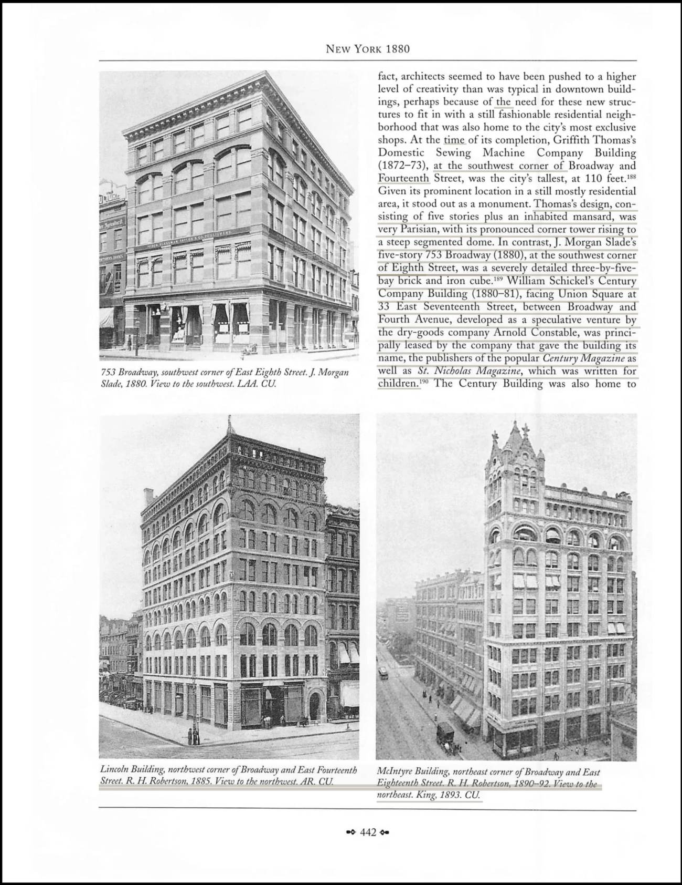
Quotes drawn from this page: 3
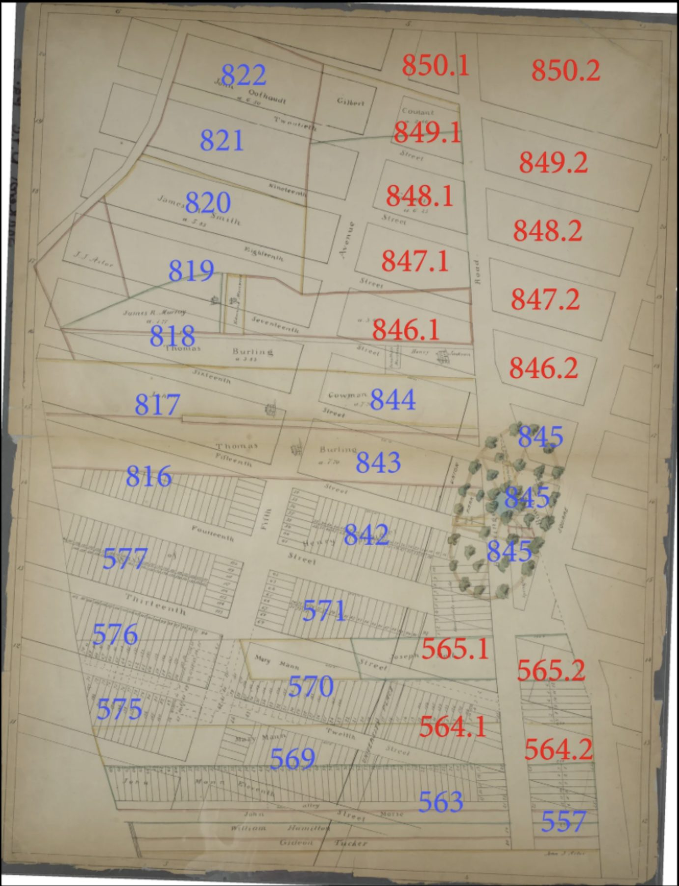
Quotes drawn from this page: 4 5 6 7 8 9 10 11 12 13 14 15 16 17 24 25 26 72
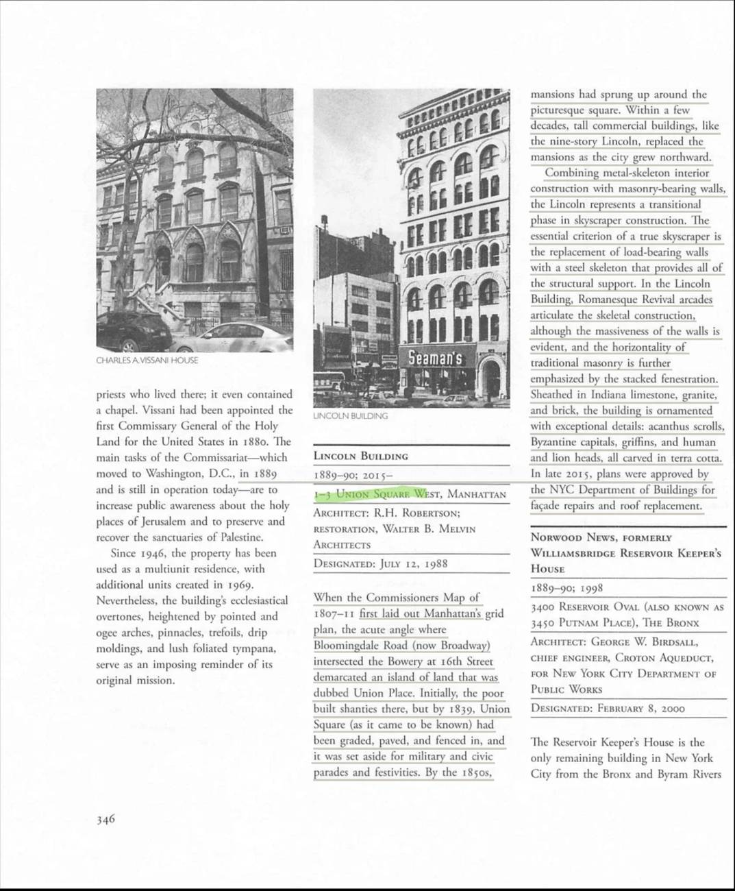
Quotes drawn from this page: 18 19 79 80
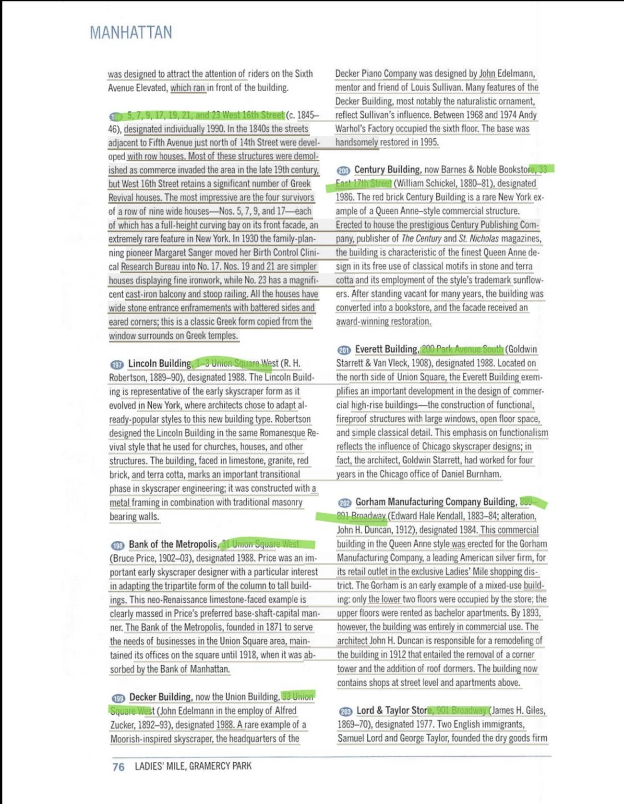
Quotes drawn from this page: 20 23 27 28 29 30 31 32 33 34 35 36 37 38 39 40 41 42 43 44 45 46 47 48 49 50 51 52 53 54 55 58 59 60 61 62 63 64 65
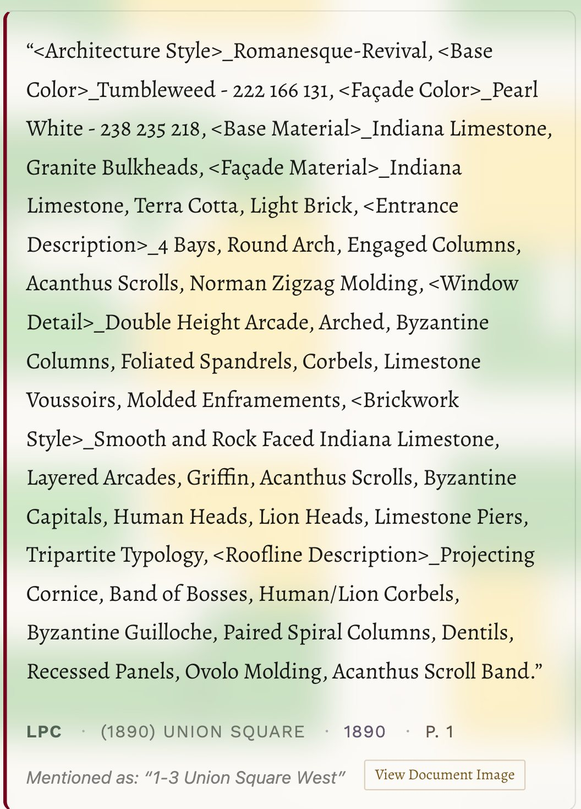
Quotes drawn from this page: 56
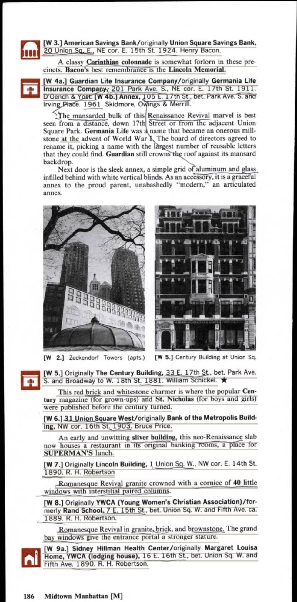
Quotes drawn from this page: 57
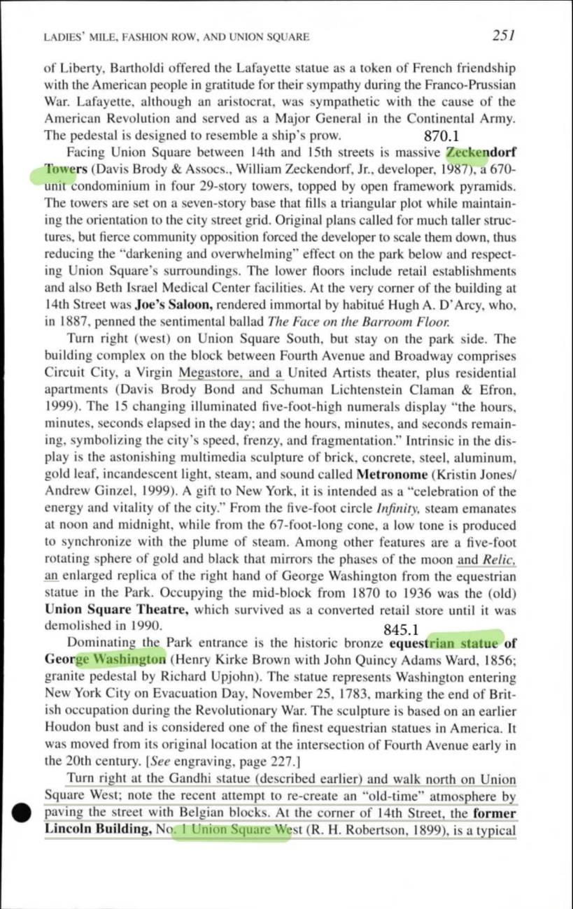
Quotes drawn from this page: 66 67
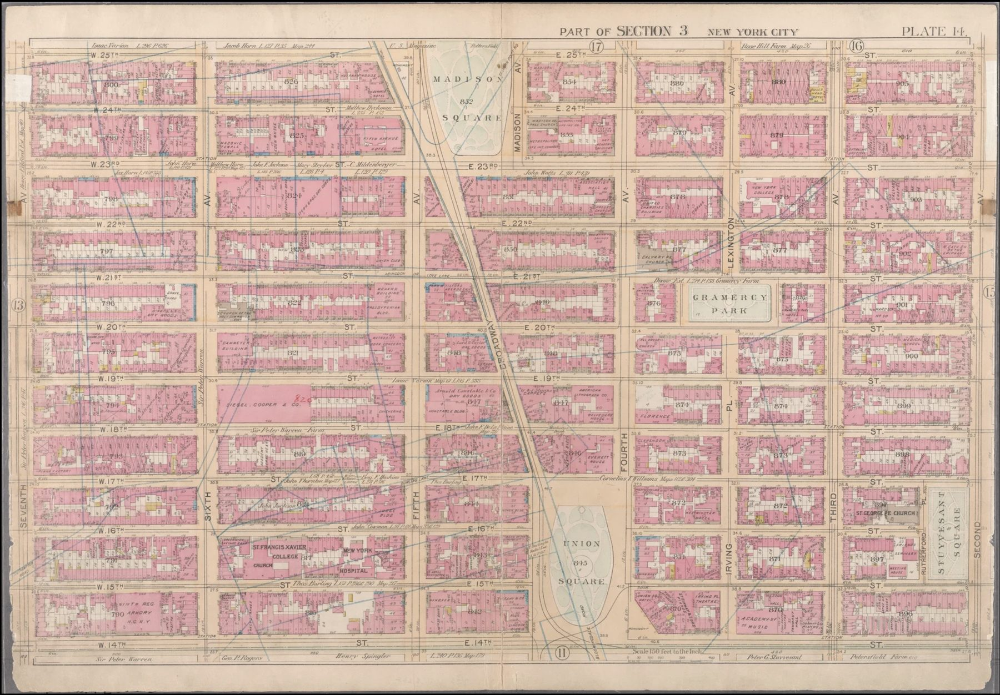
Quotes drawn from this page: 68
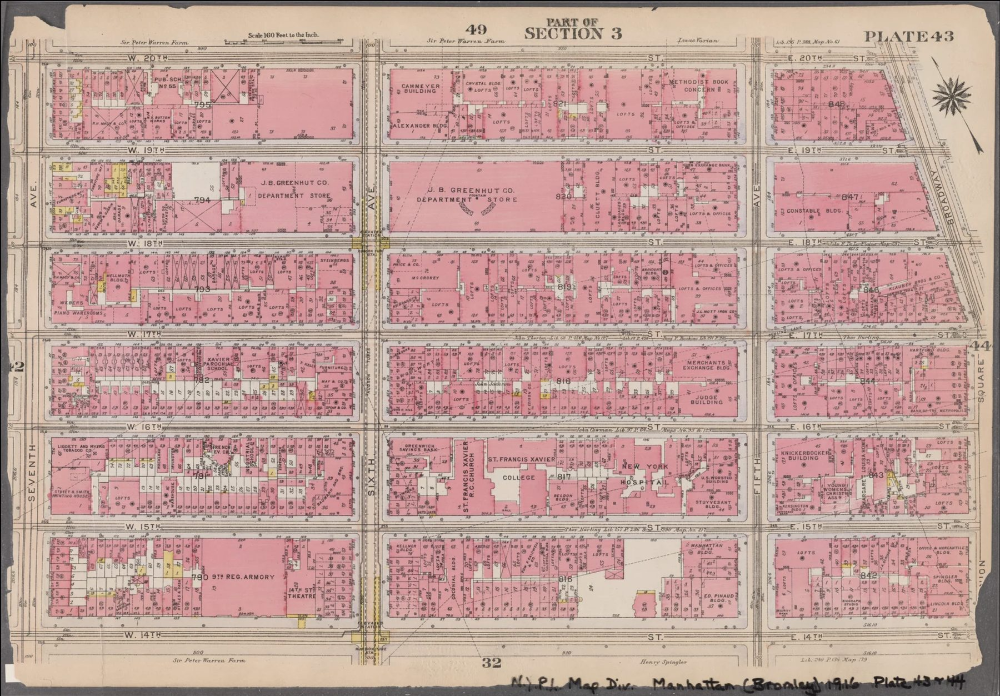
Quotes drawn from this page: 69
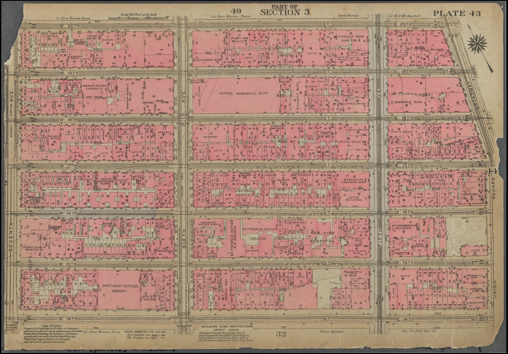
Quotes drawn from this page: 70 71
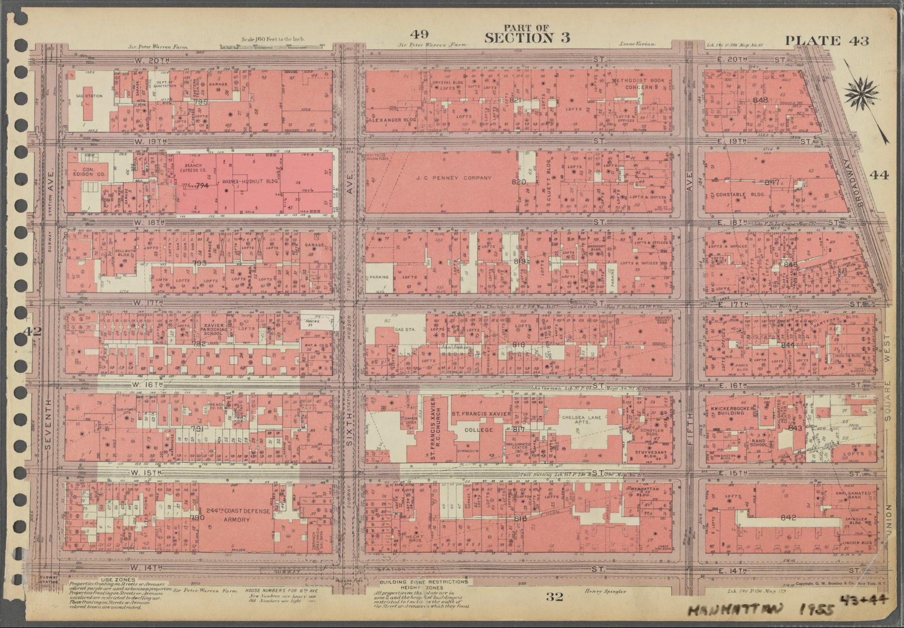
Quotes drawn from this page: 73 74 75 76
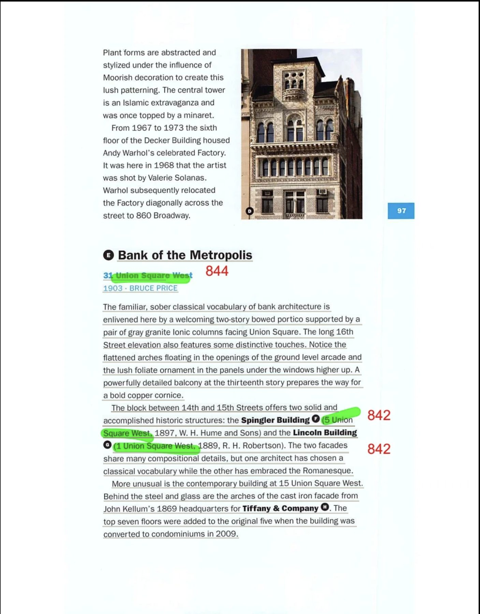
Quotes drawn from this page: 77 78
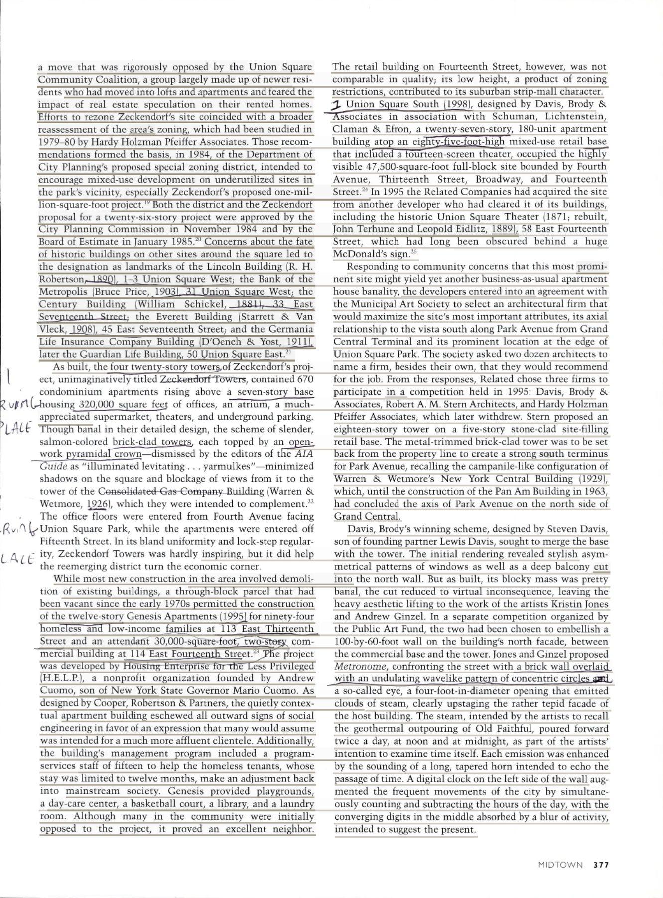